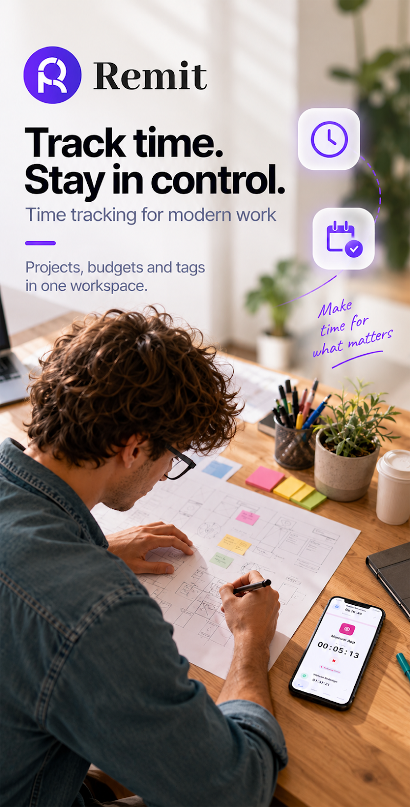
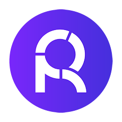

Understand your time
Turn everyday activities into clear insights. See where your hours go before deciding where you want them to take you.
TECHNOLOGY BUILT AROUND PEOPLE
We create digital products that help you find a new rhythm for your day. More awareness, more balance, more room for what you love.
You can’t multiply time.
You can grow your awareness.
OUR VISION
A full day isn’t always a fulfilling day. Between commitments, habits and working hours that stretch on, it’s easy to lose sight of what makes us feel good.
At Asgar Tech, we design and develop software and apps that make time visible, help you choose how to use it and build a balance that feels right for you. Personal wellbeing is where we start.
Turn everyday activities into clear insights. See where your hours go before deciding where you want them to take you.
Recognise the boundary between work and personal life. Value a break, a passion or a moment shared with someone you love.
Small actions, repeated, create a different rhythm. We design simple tools that help you stay consistent, day after day.

Remit · Work Timer & Tracker

RemitTime spent working is also time you could spend on yourself.
Remit helps you track your working hours and see what lies behind the numbers. Set your daily working hours to make overtime visible: time taken away from your passions, family and hobbies.
See your day more clearly and make informed choices for the next one.
Track your workStart the timer, log activities and manage breaks.
See your overtimeCompare the hours you worked with the time you planned.
Keep the details togetherOrganise projects and clients, rates, budgets, notes and expenses.
Define billable timeMark each time slot within a project as billable or non-billable, so you can distinguish chargeable work from other activities.
Available for Android
THE ASGAR TECH APPROACH
Personal wellbeing
is our measure of progress.
Every product we create starts with one question: how can technology help us live each day better?
Before thinking about features, we look at people’s needs: work that spills beyond its boundaries, habits that drain energy and meaningful things we keep putting off. From there, we design tools that help you recognise your rhythms and change them mindfully.
For Asgar Tech, measurement is the first step. Its value comes when an insight becomes a choice: knowing when to stop, protecting a moment for yourself and making time regularly for what helps you feel good.
Useful products, simple interactions and clear information. To support your decisions and leave more room for life.
WHERE WE BEGIN
An unhurried dinner. A run. An evening with someone you love.
We design technology that helps you make room for these moments, too.
GET TO KNOW US
We design and develop digital products for mindful time management and everyday habits, with personal wellbeing at their heart.
Freelancers, professionals and employees who want to track their work, organise projects and clients, and understand how they spend their hours.
Remit is available for Android. You can find features, requirements and in-app purchase details in the official Google Play listing.
No. Our apps are tools for tracking and personal awareness. They do not provide diagnoses or replace support from a healthcare professional.